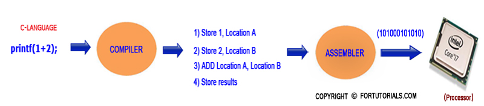

What Is Software AND About Programming
software is written by user(or)programmer, it consists of set of programs given to computer to perform certain task.
According to the computer it only read 0’s and 1’s, but we can’t remember the 0’s and 1’s
Example:
HELLO- 0100100001000101010011000100110001001111 .
For writing “HELLO” on screen we have to use this much large code.
so, we use the convenient platform, nothing but Software (consists set of programs)
program consists of instructions
Example:
system.out.println(“HELLO”); it is an instruction.
Operating System (or) other Application Software converts instructions into machine language code-0100100001000101010011000100110001001111, and this machine code is taken as input and print output "HELLO" on screen.
There are many instructions in a program all the instructions are converted in to machine code, for computer processing(such as taking input and produce output)
“SYSTEM.OUT.PRINTLN” is java instruction to system to print HELLO on screen.
In the pervious page we given notepad as example, operating system converts the notepad content into machine language. Then what about high level language like c, java e.c.t which concept play major role in conversion of c, java programs to machine language, to get that knowledge we have to study two other concepts.
1, compiler
2, Assembler
Compiler : Compiler is the software that converts high (OR) middle level language to assembly language.
Example:
C language :
Instruction for Adding two numbers 1 and 2 is written as below :
Printf(1+2);
Compiler converts printf(1+2); into assembly language code as below:
Store 1, Location A
Store 2, Location B
ADD Location A, Location B
Store results
This code is converted into machine understandable code (101000101010) by Assembler.
Assembler : Assembler is the software that converts the assembly language to machine language.
What is assembly language?
Assembly language is intermediate language, is intermediate between high level (java code) and low level(machine) language.
Example:
Assembly language program to add numbers 1 and 2 is
Store 1, Location A
Store 2, Location B
ADD Location A, Location B
Store results
Assembler convert this code in to 101000101010 (machine language) input to computer (processor) result "3" is display on screen. Processing is shown in above FIGURE.
